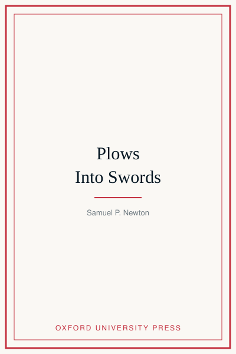
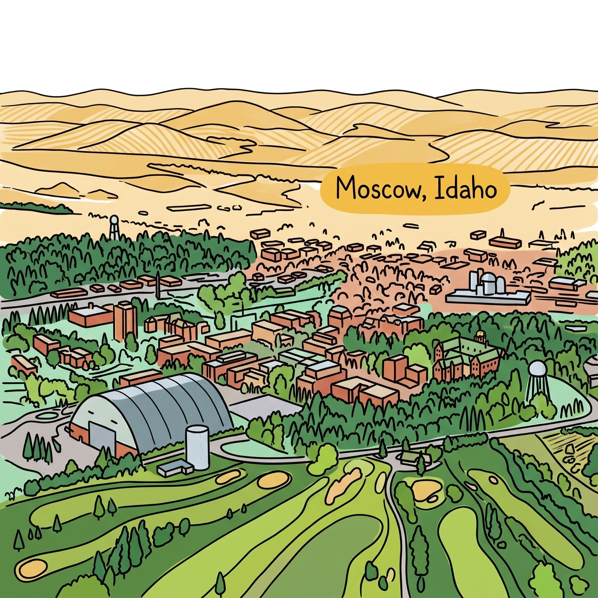

University of Idaho College of Law
875 Perimeter Drive MS 2321, Moscow, Idaho 83844

Forthcoming · Oxford University Press
Plows Into Swords
Joseph Smith and Mormon Resistance in Antebellum America, 1805–1844
Learn MorePublications
Books
- Samuel P. Newton, Plows Into Swords: Joseph Smith and Mormon Resistance in Antebellum America, 1805–1844 (Oxford University Press, forthcoming)
- Samuel P. Newton & Teresa L. Welch, Understanding Criminal Evidence: A Case-Method Approach (Wolters Kluwer, 2012)
Selected Articles
- Getting to Know You: An Expanded Approach to Capital Jury Selection, 96 Tulane L. Rev. 131 (2022)
- Kidnapping Reconsidered: Courts’ Merger Tests Do Not Remedy the Inequities Which Developed from Kidnapping’s Sensationalized and Racialized History, 28 Wm. & Mary Bill Rts. J. 635 (2020)
- Giving Teeth to State Constitutions: Using History to Argue Utah’s Constitution Affords Greater Protections to Criminal Defendants, 3 Utah J. Crim. L. 1 (2018)
- No Justice in Utah’s Justice Courts: Constitutional Issues, Systemic Problems, and the Failure to Protect Defendants in Utah’s Infamous Local Courts, 2012 Utah L. Rev. OnLaw 27 (2012) — cited by the Harvard Law Review and Virginia Law Review
Notable Cases
- Amicus Curiae Brief, Torres v. Madrid, Supreme Court of the United States — Fourth Amendment & police use of force, 2019
- Amicus Curiae Brief, Kahler v. Kansas, Supreme Court of the United States — insanity defense, 2019
- State v. Wilder, 2018 UT 17 — kidnapping merger doctrine
- State v. Perea, 322 P.3d 624 (Utah 2014) — aggravated murder
In the News
As featured in

- “Bryan Kohberger wants out of his plea deal. Here’s what experts say about his chances,” CNN, July 28, 2026
- “‘A narcissist’ — victim’s family blasts Kohberger for challenging Idaho murder conviction,” BBC News, July 28, 2026
- “Judge Enters Not-Guilty Plea for Idaho Stabbing Suspect Kohberger,” Washington Post, May 22, 2023
- “DNA evidence likely key in Idaho murder case. How does testing, use in court work?” Seattle Times, January 11, 2023
- “Mom of missing Idaho kids and husband seen island hopping,” USA Today, February 18, 2020
- “Firing squad,” Evening Brief, KUER 90.1, March 6, 2025

© 2026 Samuel P. Newton. All Rights Reserved.